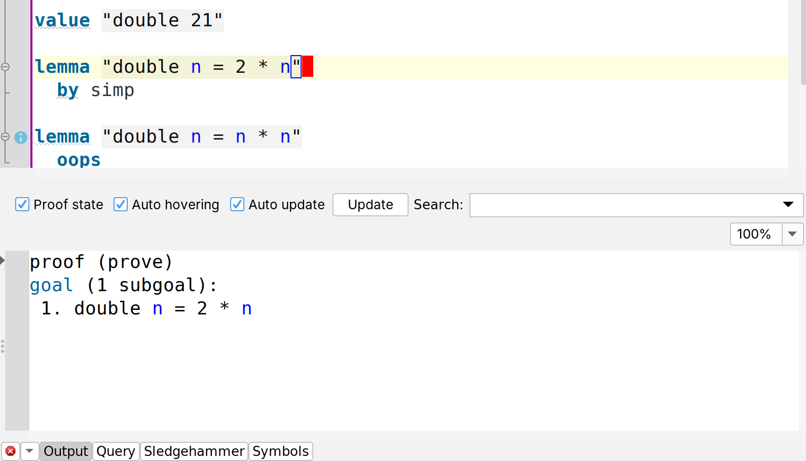
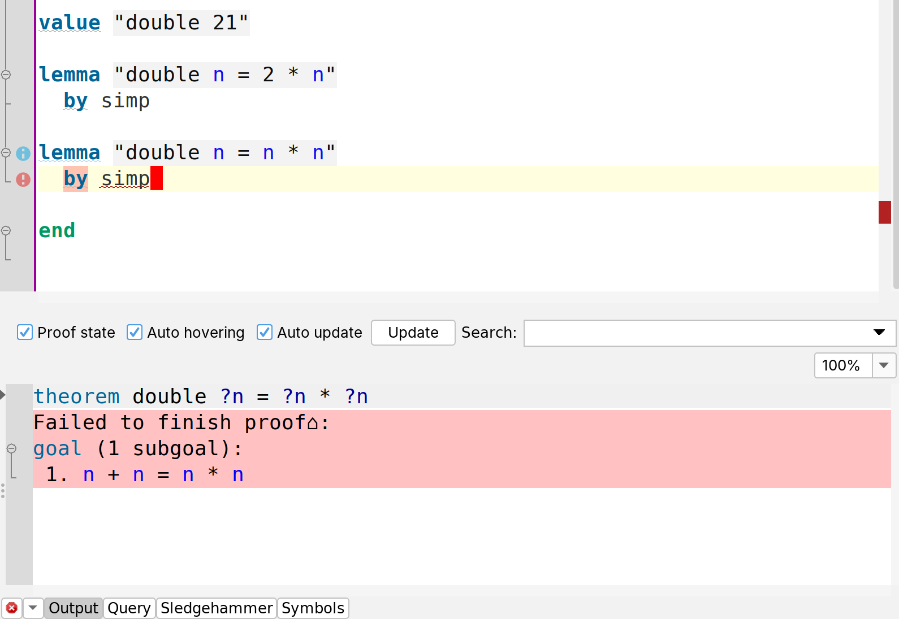

When software must not fail
Most software bugs are a nuisance: an app crashes, you restart it, you lose a few minutes. Some software, though, flies aircraft, doses radiation, runs trains, moves money or guards secrets. There a bug can cost lives or a fortune, and finding it after the fact is too late. Three well-documented failures show what is at stake.
- Ariane 5, 1996. Less than a minute after its first launch, the rocket veered off course and broke up. Its guidance software, reused from the slower Ariane 4, converted a 64-bit floating-point number to a 16-bit integer. On the new rocket the value no longer fitted, the conversion failed, and the failure shut down both inertial reference units, the main one and its identical backup.
- Therac-25, 1985–1987. A radiation therapy machine gave massive overdoses to six patients, at least three of whom died. Among the causes was a race condition in the control software: an operator who edited the treatment settings quickly could leave the machine in a lethal configuration that earlier models had blocked with hardware interlocks.
- Pentium FDIV, 1994. Intel’s new processor divided some numbers wrongly because a few entries were missing from a table in its division circuit. Replacing the chips cost Intel 475 million dollars. Since then, chip makers have used theorem provers to verify their arithmetic units.
In each case the system had been tested, and testing missed the bug. Edsger Dijkstra put the reason in one sentence in 1970: “Program testing can be used to show the presence of bugs, but never to show their absence.”
A little arithmetic shows why. A function that takes two 64-bit integers has , about , possible inputs. Testing a billion of them every second, you would need about years to try them all, nearly a trillion times the age of the universe. Tests sample this space; they cannot cover it.
There is another way: describe what the program must do in mathematics, and prove that it does so for every input. That is the idea behind formal methods, and it works at industrial scale.
- seL4 is an operating-system microkernel whose C code was proved, in 2009, to implement its specification, with a machine-checked proof in Isabelle/HOL, the system this series teaches. It was the first general-purpose kernel with such a proof.
- CompCert is a C compiler proved correct in the proof assistant Rocq (formerly Coq). In 2011, researchers tested C compilers with randomly generated programs and found many bugs that made GCC and LLVM produce wrong code, but none in the verified parts of CompCert.
- Amazon Web Services engineers have written specifications in the language TLA+ since 2011, for systems such as S3 and DynamoDB, and checked them with a model checker. It found subtle design bugs; one needed a 35-step sequence of events to show.
- Paris Métro line 14 has run without drivers since it opened in 1998. Its safety-critical software was developed and proved with the B method.
Formal methods cost time and expertise, so they are used where failure costs more: avionics, railways, medical devices, processors, operating-system kernels, compilers, cryptographic protocols. Standards for these fields recognise them: the avionics standard DO-178C has a formal-methods supplement, DO-333, and the highest level of the Common Criteria for security evaluation, EAL 7, requires a formally verified design.
What makes a method formal
Everyday language is good for talking and bad for specifying. Take a requirement from a school’s software: “Sort the list of scores before printing it.” Highest first or lowest first? What happens to two equal scores? And a question that is easy to miss: may the sorting function return the empty list? An empty list is certainly sorted. Nobody would write that function on purpose, but nothing in the sentence forbids it, and a program that loses scores is exactly the kind of bug that slips through.
A formal method removes this vagueness with three ingredients:
- A formal language with an exact grammar, so that every statement has one reading.
- A semantics, a mathematical definition of what each statement means and when it is true.
- A proof system, rules for deriving true statements step by step, so simple that a computer can check every step.
A formal method is a way of specifying or verifying a system in a language with a precise mathematical meaning, so that claims about the system can be checked by calculation or proof, often by a computer.
In such a language the sorting requirement becomes two conditions on the input list and the output list :
Read it as “ys is sorted, and ys contains the same elements as xs, each as often”. The symbol means “and”; turns a list into the bag (multiset) of its elements, ignoring order. The second condition is the one the sentence forgot: it rules out losing, adding or duplicating scores. You will learn to read and write such formulas in Modules 2 and 3; for now, notice that writing the specification forced a decision the sentence left open.
A specification is a precise statement of what a system must do, without saying how. A formal specification is written in a formal language.
Verification shows that an implementation meets its specification. Validation checks that the specification describes what is actually wanted. Barry Boehm’s summary: verification asks “are we building the product right?”, validation asks “are we building the right product?”.
Formal methods sit between a requirement and a program. Validation connects the requirement to the specification; verification connects the specification to the implementation.
A test says something about one input. A proof says something about every input. But a proof only shows that the program meets its specification: if the specification is wrong, you have proved the wrong thing. Validation still matters.
“Verified” never means “correct” without qualification. It means correct with respect to a specification, under assumptions: that the compiler, the hardware and the model of the environment behave as described. These assumptions, together with the proof checker itself, are the trusted base. Knowing what is in it is part of using formal methods well.
A map of formal methods
Formal methods are a family. They differ in how much they can express, how much they do automatically, and what they give you back. Testing is not a formal method, but it is the baseline every other method is compared with.
| Method | You provide | It does | You get | Limits | Examples |
|---|---|---|---|---|---|
| Testing | Inputs and expected outputs | Runs the program | Bugs on the inputs you chose | Cannot show that bugs are absent | Unit tests; property-based testing (QuickCheck, Hypothesis) |
| Model checking | A finite model of the system and a property | Explores every reachable state | “Holds”, or a counterexample trace | The number of states explodes; models must be finite or abstracted | SPIN, NuSMV, TLC for TLA+, UPPAAL |
| SAT and SMT solving | A formula over Booleans, numbers, arrays or bit vectors | Decides automatically whether it can be made true | A satisfying assignment, or “unsatisfiable” | Many questions are undecidable or too hard: may give up | MiniSat, CaDiCaL, Z3, cvc5 |
| Interactive theorem proving | Definitions and theorems in an expressive logic, and the proofs, with help from automation | Checks every proof step | A theorem that holds in every case, including infinitely many | Needs human effort and skill | Isabelle, Rocq, Lean, HOL4, ACL2 |
Two things follow from the table. First, the methods trade expressiveness against automation. A SAT solver answers on its own but only about finite, fixed-size problems; a theorem prover can state that a compiler is correct for every program ever written, but needs your guidance to prove it. Second, the methods combine. Program verifiers such as Dafny and Frama-C turn programs into formulas for SMT solvers. And Isabelle, as you will see, includes a tester (Quickcheck), a counterexample finder (Nitpick, which uses a SAT solver) and a bridge to automatic provers and SMT solvers (Sledgehammer, which calls Z3, cvc5 and others). The proofs that Sledgehammer finds are checked by the same small kernel as every other proof (Section 1.4).
Why can a computer not decide by itself whether any statement is true? Because no algorithm can: Alan Turing showed in 1936 that no program can decide, for every program and input, whether it halts, and Kurt Gödel had shown that no proof system can prove every truth about arithmetic. So for expressive logics, some human guidance is unavoidable. Module 3 returns to this.
Proof assistants and why you can trust them
A proof assistant, or interactive theorem prover, is a program that checks proofs written in a formal logic and helps you find them. Think of a colleague who reads every line of your proof, never tires and never lets a gap pass, together with a team of helpers who can fill in routine steps.
But a proof assistant is itself a large program. Isabelle has hundreds of thousands of lines of code. Why trust it more than the software it checks? The answer is an architecture invented by Robin Milner in the 1970s for the Edinburgh LCF system (Logic for Computable Functions), and used by Isabelle and many other provers.
In an LCF-style prover, theorems are values of an abstract type, thm. The only functions that can
create values of this type implement the inference rules of the logic. They form a small kernel.
Every other part of the system, however clever, must call the kernel to build a theorem.
The LCF architecture. Proof tools can be large and can have bugs, because every theorem they produce is built by the kernel’s rules.
So the simplifier, the automatic provers and every other tool are outside the trusted base: if one of them has a bug, a proof may fail or take forever, but a false statement cannot become a theorem. Only the kernel has to be right, and it is small enough to be checked with great care. Milner also designed a programming language, ML (“Meta Language”), for writing such tools safely; Isabelle is still written in ML and Scala.
Isabelle was begun by Lawrence Paulson at the University of Cambridge in 1986 as a generic proof assistant: a framework in which many logics can be defined. Tobias Nipkow and his group at the Technical University of Munich developed Isabelle/HOL, the logic almost everyone uses, and Makarius Wenzel created the Isar proof language and the Isabelle/jEdit prover IDE. HOL stands for higher-order logic: a typed logic in which functions are values like any other, close to a functional programming language with logic added. This series uses Isabelle/HOL throughout; “Isabelle” below means Isabelle/HOL.
Isabelle/HOL has been used for the seL4 proof, for part of the proof of the Kepler conjecture (with HOL Light), and for hundreds of developments in the Archive of Formal Proofs, an online library of checked Isabelle proofs. Other proof assistants you may meet are Rocq (formerly Coq), Lean, HOL4 and ACL2. They differ in their logics and styles, but the ideas in this series carry over.
Install Isabelle2026
Isabelle2026, released in October 2026, is the current version. The download contains everything: the Isabelle/jEdit editor, the prebuilt HOL logic, the automatic provers and the manuals. You do not need to install Java or anything else. Isabelle’s home page asks for 4 GB of memory and 2 processor cores for small experiments, and 8 GB and 4 cores for medium-sized applications; this series stays small.
Download it from isabelle.in.tum.de (the “Download for …” links on the home page), then follow the steps for your system.
- Download Isabelle2026.exe (for Windows 10 or 11) and run it. It is a self-extracting archive: choose a folder to unpack into, for example your home folder.
- Isabelle is not signed by a registered developer, so Windows rejects it at first. If a blue window says “Windows protected your PC”, click More info, then Run anyway.
- The installer starts Isabelle/jEdit when it has finished and creates a desktop shortcut. Use the shortcut from now on.
- Download the bundle for your Mac: macOS (ARM) for Apple silicon (M1 and later), macOS (Intel) otherwise. Unpack it if your browser has not done so, and move Isabelle2026.app into the Applications folder.
- Isabelle is not signed by a registered developer, so macOS blocks it at first. Open Isabelle2026.app and click Cancel in the security dialog.
- Open System Settings → Privacy & Security. Near the bottom, a message says Isabelle2026 was blocked; click Open Anyway and confirm. From now on Isabelle starts like any other application.
-
Download Isabelle2026_linux.tar.gz (or the Linux (ARM) bundle on an ARM computer) and unpack it wherever you like:
$ tar -xzf Isabelle2026_linux.tar.gz -
Start Isabelle/jEdit:
$ Isabelle2026/Isabelle2026You need a graphical desktop. The command-line tools are in
Isabelle2026/bin/isabelle; this series does not need them.
On the first start Isabelle/jEdit opens an empty theory called Scratch.thy from your home folder.
Wait until the Theories panel on the right says Prover: ready: Isabelle has then loaded HOL and is
ready to check what you type.
If something went wrong
- Windows: Sledgehammer or
smtreports that a prover failed to run. Windows Defender can block Isabelle’s external provers. Isabelle’s installation page recommends excluding the whole Isabelle folder in Virus & threat protection. You will not need these tools until Module 9. - macOS: there is no Open Anyway button. It appears only after you have tried to open the application once. Open Isabelle2026.app again, click Cancel, and look again in Privacy & Security.
- Isabelle is very slow, or stops with an out-of-memory message. Close other large programs. Isabelle needs the memory stated above.
A tour of Isabelle/jEdit
Isabelle/jEdit, the window you now have open, is a prover IDE: an editor in which Isabelle checks your text continuously, as you type. There is no “run” button. Figure 1.3 shows the window with the theory you are about to write.

Isabelle/jEdit, Isabelle2026 on Linux. Windows and macOS look the same apart from the window frame.
- The text area, where you write a theory. Commands are coloured by kind, and the gutter on the left shows icons for messages: a blue i for information, a red ! for an error.
- The Output panel shows the messages of the command at the cursor. It is closed at first: click the Output tab at the bottom of the window to open it.
- Proof state. Tick this box once. Isabelle then shows, in the Output panel, what remains to be proved at the cursor. The setting is remembered for future sessions.
- The Theories panel shows Prover: ready and the progress of each open theory.
- The Documentation panel lists the manuals that come with Isabelle. The most useful is prog-prove, Programming and Proving in Isabelle/HOL, which Part III of this series follows.
A few habits help from the start. Hover the mouse over underlined text to see its message. Hold
Ctrl (Cmd on macOS) and hover over a name to see its type and definition; click to
jump there. And to type a mathematical symbol, type its abbreviation from the table below: Isabelle
replaces it with the symbol, either at once or through a small pop-up in which you press Tab.
You can also type a backslash and the symbol’s name, such as \forall, or click the symbol in the
Symbols panel at the bottom.
| Symbol | Type | Meaning |
|---|---|---|
| ⇒ | => |
function type |
| ∧ | /\ or & |
and |
| ∨ | \/ or | |
or |
| ¬ | ~ |
not |
| ⟶ | --> |
implies |
| ⟷ | <--> |
if and only if |
| ∀ | \forall |
for all |
| ∃ | \exists |
there exists |
| ≠ | ~= |
not equal |
| ≤ | <= |
less than or equal |
Copying works too: the Isabelle text on these pages uses the same Unicode symbols as Isabelle, so you can copy a block with its Copy button and paste it into Isabelle/jEdit.
Your first theory
Everything you write in Isabelle goes into a theory: a file of definitions, statements and proofs, like a module in a programming language. You will now write one, step by step, and meet Isabelle’s three basic activities: computing, proving and refuting.
Create the file
In Isabelle/jEdit, choose File → New, then File → Save As…. Make a folder for this series, for
example isabelle in your home folder, and save the file there as First.thy. Then type:
theory First
imports Main
begin
endtheory First names the theory, and the name must match the file name: a theory First lives in
First.thy. imports Main makes the standard library available: numbers, lists, sets and thousands of
proved facts about them. Everything else goes between begin and end. The commands below go on new
lines before end.
If something went wrong
If Isabelle underlines First and says
Bad theory name "First" for file "Scratch.thy"⌂
the theory name and the file name differ. Save the file as First.thy, or change the name after
theory to match the file.
Compute
Type this line:
value "2 + 3 :: nat"Put the cursor on the line. The Output panel shows the result and its type:
"5"
:: "nat"value evaluates a term. The text inside the quotation marks is in Isabelle’s inner syntax, the
language of terms and types; commands such as value and lemma are outer syntax and stay outside the
quotes. :: nat is a type annotation: it says that 2 + 3 is a natural number, one of 0, 1, 2, … .
Without it Isabelle would not know which kind of number you mean, and could not evaluate the sum.
Isabelle computes with more than numbers. rev reverses a list:
value "rev [1, 2, 3 :: nat]""[3, 2, 1]"
:: "nat list"If something went wrong
Leave out the type and Isabelle refuses:
value "2 + 2"Wellsortedness error:
Type 'a not of sort term_of
Cannot derive subsort relation numeral < term_ofThe message is cryptic, but the cure is simple: add a type annotation such as :: nat or :: int. You
will learn to read messages like this one in Module 8.
Prove
Now a claim about every list: reversing a list twice gives the list back. Type the statement:
lemma "rev (rev xs) = xs"The variable xs is not defined anywhere. Isabelle treats it as standing for any list, so the lemma
claims the equation for every list. With Proof state ticked, the Output panel shows the goal, the
statement still to be proved:
proof (prove)
goal (1 subgoal):
1. rev (rev xs) = xsNow prove it. On the next line type:
by simpThe goal disappears and nothing is reported: the proof is accepted. simp is the simplifier, which
rewrites a goal with equations it knows until the goal becomes True. Here the library already contains
the fact that rev (rev xs) = xs. Isabelle/jEdit even tells you so: the blue i in the gutter next
to the lemma carries the message “Auto solve_direct: the current goal can be solved directly with
List.rev_rev_ident”. Behind the scenes, simp built the theorem by calling the kernel’s rules, as
Section 1.4 described.
Define and prove
Now define a function of your own. fun defines a function by equations:
fun double :: "nat ⇒ nat" where
"double n = n + n"consts
double :: "nat ⇒ nat"
Found termination order: "{}"double :: "nat ⇒ nat" declares that double takes a natural number and returns one; type => to get
the ⇒ symbol. The equation after where says what double computes. Isabelle answers with the new
constant and its type, and reports that it found a termination order: for every function defined with
fun, Isabelle proves that the function terminates. Here there is no recursion, so the proof is trivial;
Modules 5 and 8 explain why termination matters. Now try the function:
value "double 21""42"
:: "nat"A test, though, only shows one value. Here is a claim about every n, with its proof:
lemma "double n = 2 * n"
by simpThe simplifier uses the defining equation of double (fun registers it automatically) and the laws of
arithmetic. Put the cursor on the lemma line to see the goal, as in Figure 1.4.

With Proof state ticked, the Output panel shows the goal at the cursor.
Refute
What if a claim is false? Try one:
lemma "double n = n * n"Within a second, a blue i appears next to the line. Put the cursor on the line (Figure 1.5): Isabelle/jEdit has tried the claim on small values automatically, with Quickcheck, and found one where it fails. You can also run Quickcheck yourself, which is what the theory files of this series do:
quickcheckTesting conjecture with Quickcheck-exhaustive...
Quickcheck found a counterexample:
n = 1
Evaluated terms:
double n = 2
n * n = 1
Isabelle/jEdit runs Quickcheck on every new lemma. It reports n = 1: double 1 is 2, but 1 * 1 is 1.
Notice that the claim holds for n = 0 and for n = 2. A tester who tried only those two values would
have been satisfied. Quickcheck tries small values systematically, which is why it found n = 1.
The lemma is false, so no proof can succeed. Finish it with oops, which abandons a proof:
oopsWhat if you had tried by simp anyway? The proof fails, and Isabelle shows what it could not prove:
lemma "double n = n * n"
by simpFailed to finish proof⌂:
goal (1 subgoal):
1. n + n = n * nThe simplifier unfolded double, but n + n = n * n is not true in general, so it stopped. Isabelle/jEdit
shows the failure in three ways: a red ! in the gutter, a red underline under by simp, and the
message in the Output panel (Figure 1.6). The ⌂ in the message stands for the position the message is
about; in Isabelle/jEdit it is a link back to that place in the text. Replace by simp with oops and the
error goes away.

A failed proof. The error is attached to the command that failed, and the remaining goal is shown. The
line theorem double ?n = ?n * ?n above it does not mean the proof succeeded: Isabelle/jEdit checks
proofs in parallel and records a statement before its proof has finished. The red message is what counts.
You have now seen the three things you will do in Isabelle all through this series: compute with
value, prove with lemma … by …, and refute with Quickcheck. Of the three, only a proof covers
every case, and only a proof is checked by the kernel.
Save the theory with File → Save (Ctrl+S, or Cmd+S on macOS).
How this series works
The series has four parts:
| Part | Modules | What you learn |
|---|---|---|
| I. Foundations | 1–5 | Formal methods; propositional and predicate logic; sets, relations and functions; induction and recursion |
| II. Formal proof | 6–7 | What a proof is; natural deduction on paper and in Isabelle |
| III. Isabelle/HOL in practice | 8–11 | Functional programming in HOL; proof automation; structured proofs in Isar; induction in depth |
| IV. Verification | 12–14 | Verifying functional programs; modelling systems with state machines and invariants; a verified compiler |
Part I is mostly mathematics, done on paper first: each idea gets a definition, a worked example, and then a Check it in Isabelle box where Isabelle confirms it. From Part II on, Isabelle takes the lead. The Mathematical Foundations series covers logic, sets and proof for computing in general, with more practice; this series takes what formal methods need from those subjects and goes on to machine-checked proof.
On every page:
- Definition, Example and Fact boxes are numbered, so that later modules can refer to them.
- Isabelle text is shown in Isabelle’s own font, with a Copy button. Every output shown below a block was produced by Isabelle2026 from that very text: if your screen shows something else, check what you typed. Blocks marked fails on purpose show an error deliberately.
- Exercises come at three levels: ★ check your understanding, ★★ apply what you learned, ★★★ stretch yourself. Every exercise has a full solution, folded away; try first, then look. The Isabelle in every solution has been checked by Isabelle.
- A short quiz at the end checks the main ideas.
All the Isabelle text of the series is also in one download,
formal-methods-theories.zip: a theory Module_NN.thy for each module and
Module_NN_Solutions.thy with its exercise solutions. Unpack it and open any theory in Isabelle/jEdit
to replay a module.
Each module takes two to four hours with its exercises. Go in order: each module uses the ones before it. If you are stuck, the troubleshooting page lists Isabelle’s common messages with their causes, and Isabelle’s community answers questions on the isabelle-users mailing list and on Zulip chat.
What you learned
- Testing samples the inputs; it can show that bugs are present but never that they are absent. Formal methods describe a system in mathematics and check claims about all of its behaviours.
- A formal method has a formal language, a semantics and a proof system.
- A specification says what a system must do. Verification shows that an implementation meets its specification; validation checks that the specification is what is wanted.
- Testing, model checking, SAT and SMT solving and interactive theorem proving trade expressiveness against automation; Isabelle combines a theorem prover with automatic tools.
- In an LCF-style prover such as Isabelle, only a small kernel can create theorems, so bugs in the proof tools cannot produce false theorems.
- An Isabelle theory
Tlives in the fileT.thy, importsMain, and contains commands betweenbeginandend.valuecomputes,lemma … by simpproves,quickchecksearches for counterexamples, andoopsabandons a proof.
Exercises
For each activity, say whether it is verification or validation, and why.
- Showing the customer what the specification of a timetable system implies for next week’s trains, and asking “is this what you meant?”.
- Proving in Isabelle that a sorting function always returns a sorted list with the same elements.
- Discovering that “sort the scores” should have said “highest score first”.
- Running a model checker to show that no reachable state of a protocol design violates its safety property.
Show solution
- Validation: it checks whether the specification describes what the customer wants.
- Verification: it shows that the implementation meets its specification.
- Validation: it corrects the specification itself.
- Verification: it shows that a design meets a stated property. (The design is checked against the property, the property against nothing. Whether the property is the right one is a validation question.)
Which method from the table in Section 1.3 fits each task best?
- Check that a 32-bit multiplier circuit agrees with a reference design on every pair of inputs.
- Show that a cache protocol for three processors never lets two processors write the same address at once.
- Prove that a sorting function is correct for lists of every length.
- Find bugs quickly in a parser by feeding it thousands of random inputs.
Show solution
- SAT or SMT solving. The question is about fixed-size bit vectors, which a solver handles automatically (this is called equivalence checking).
- Model checking. With three processors the protocol has finitely many states, and the property must hold in every reachable one.
- Interactive theorem proving. “Every length” means infinitely many cases; this needs induction, which Module 5 and Part III teach.
- Testing, specifically property-based or random testing. It will not prove the parser correct, but it is cheap and finds many bugs.
A function takes three 32-bit integers. How many different inputs does it have? How long would it take to test them all at tests per second? Take a year to be about seconds.
Show solution
There are inputs. At per second that takes about seconds, which is years: some 2.5 trillion years.
Add a function triple :: "nat ⇒ nat" to your theory, with triple n = n + n + n. Use value to compute
triple 14. Then prove two lemmas with by simp: triple n = 3 * n, and triple n = double n + n.
Show solution
fun triple :: "nat ⇒ nat" where
"triple n = n + n + n"
value "triple 14""42"
:: "nat"lemma "triple n = 3 * n"
by simp
lemma "triple n = double n + n"
by simpBoth proofs work because simp unfolds the definitions of triple and double and then does the
arithmetic.
In Isabelle, xs @ ys appends two lists: [1, 2] @ [3] is [1, 2, 3]. Someone claims that
rev (xs @ ys) = rev xs @ rev ys. Use quickcheck to test the claim. Read the counterexample, work out
what the correct law must be, and prove it with by simp.
Show solution
lemma "rev (xs @ ys) = rev xs @ rev ys"
quickcheck
oopsTesting conjecture with Quickcheck-exhaustive...
Quickcheck found a counterexample:
xs = [a2]
ys = [a1]
Evaluated terms:
rev (xs @ ys) = [a1, a2]
rev xs @ rev ys = [a2, a1]With one element in each list, rev (xs @ ys) puts ys’s element first, while rev xs @ rev ys
keeps the order. Reversing a joined list reverses the order of the parts too:
lemma "rev (xs @ ys) = rev ys @ rev xs"
by simpQuickcheck calls the elements a₁ and a₂: two different values of an unknown element type.
Isabelle accepts your proof that a C function meets its specification. List at least four things that could still make the function misbehave when it runs on a real computer.
Show solution
Any of these, among others:
- The specification is wrong or incomplete: it does not say what is really wanted (a validation failure).
- The model of C used in the proof differs from what the C standard or the compiler does, for example on integer overflow or memory layout.
- The compiler has a bug and produces machine code that does not match the C code (unless the compiler is verified too, as CompCert is).
- The hardware is faulty or behaves differently from its documentation.
- The assumptions of the theorem do not hold in practice, for example that the caller passes a valid pointer, or that no other thread changes the data.
- The kernel of the proof assistant, or the logic itself, is unsound. This is the least likely item: the kernel is small and has been scrutinised for decades.
Suppose a programmer adds a bug to Isabelle’s simplifier, outside the kernel, that makes it rewrite
0 to 1 in every goal. Explain what happens when you then try to prove the false statement 0 = 1 by
simp, and why the LCF architecture matters here.
Show solution
In an LCF-style prover the simplifier cannot announce a theorem on its own authority: to produce one it must build it
by applying the kernel’s inference rules, because only the kernel can create values of type thm. The
kernel checks each step. Rewriting 0 to 1 is not a valid step: no rule allows it, because the
equation 0 = 1 is not a theorem. So the buggy simplifier either fails, or raises an error when it tries
to make an invalid step, and Isabelle does not accept 0 = 1.
The bug therefore costs you a working simplifier, not the soundness of your results. In a prover without this architecture, where the simplifier could create theorems directly, the same bug would let a false statement become a theorem, and every proof built on it would be worthless.
Check yourself
value "2 + 3 :: nat"?2 exist in many types (natural numbers, integers, reals …). The annotation picks one.oops.